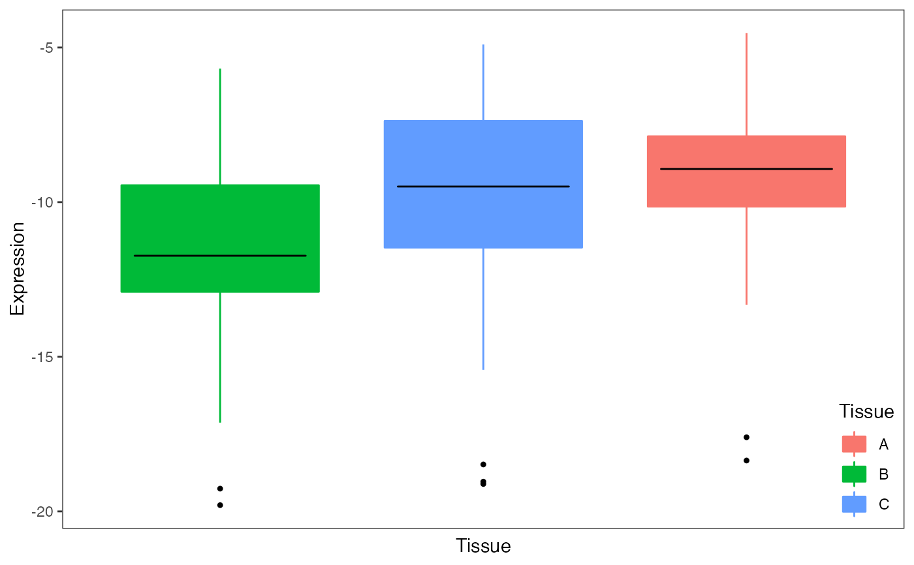
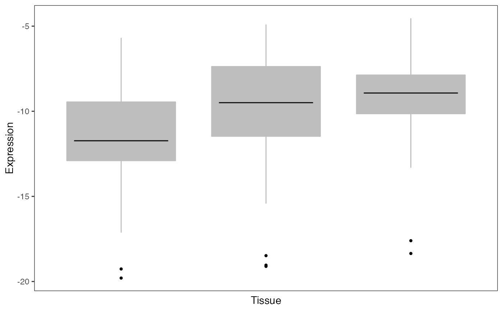
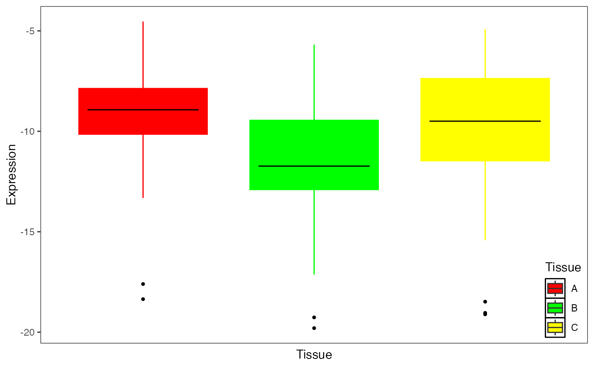

Plot gene expression stratified by another variable
Usage
plotStratifyBy(
geneExpr,
xval,
yval,
xlab = xval,
ylab = yval,
main = NULL,
sortBy = xval,
colorBy = xval,
sort = TRUE,
text = NULL,
text.y = 1,
text.size = 5,
pts.cex = 1,
ylim = NULL,
legend = TRUE,
x.labels = FALSE
)Arguments
- geneExpr
data.frame of gene expression values and another variable for each sample. If there are multiple columns, the user can specify which one to use
- xval
name of column in geneExpr to be used along x-axis to stratify gene expression
- yval
name of column in geneExpr indicating gene expression
- xlab
label x-asis. Defaults to value of xval
- ylab
label y-asis. Defaults to value of yval
- main
main label
- sortBy
name of column in geneExpr to sort samples by. Defaults to xval
- colorBy
name of column in geneExpr to color box plots. Defaults to xval
- sort
if TRUE, sort boxplots by median value, else use default ordering
- text
plot text on the top left of the plot
- text.y
indicate position of the text on the y-axis as a fraction of the y-axis range
- text.size
size of text
- pts.cex
size of points
- ylim
specify range of y-axis
- legend
show legend
- x.labels
show x axis labels
Examples
# load library
# library(variancePartition)
# load simulated data:
data(varPartData)
# Create data.frame with expression and Tissue information for each sample
GE <- data.frame(Expression = geneExpr[1, ], Tissue = info$Tissue)
# Plot expression stratified by Tissue
plotStratifyBy(GE, "Tissue", "Expression")

# Omit legend and color boxes grey
plotStratifyBy(GE, "Tissue", "Expression", colorBy = NULL)

# Specify colors
col <- c(B = "green", A = "red", C = "yellow")
plotStratifyBy(GE, "Tissue", "Expression", colorBy = col, sort = FALSE)
